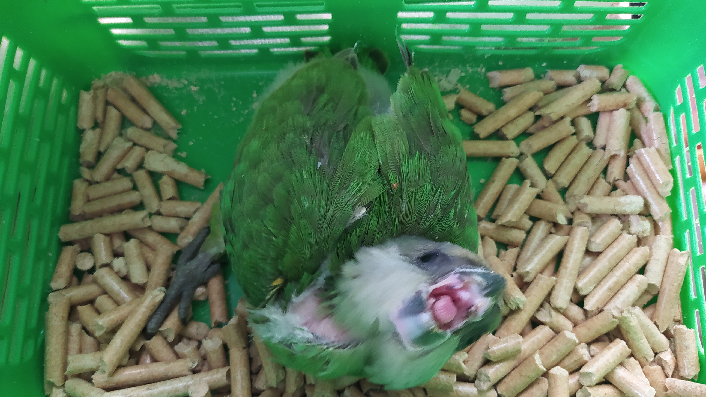

การเลี้ยงนกลูกป้อน
สรุปการเลี้ยงนกลูกป้อนฉบับของผมครับ
นาย สพล เอี่ยมเจริญ
30/5/2566
การให้อาหาร
การให้อาหารมันมีเวลาของแต่ละคนไม่เหมือนกัน แต่ผมจะให้ทุกๆ 4 ชั่วโมง 3 มื้อเช่น 7 โมง 11 โมง บ่าย 3 หรือบางคนจะให้4มื้อให้อีกที1ทุ่มแล้วแต่สะดวก การชงอาหาร นกแต่ละชนิดกินแตกต่างกันอย่างผมเลี้ยงค๊อกคาเทลก็ให้10มิลลิลิตรต่อมื้อ ก็ใช้อาหารครึ่งช้อนโยเกิร์ตต่อน้ำร้อน9มิลลิลิตร อุณหภูมิอาหารที่ผสมแล้วประมาณ38-41องศา เหลวมากไปเติมอาหาร ข้นมากไปเติมน้ำร้อน

วิธีการให้
ผมจะใช้ไซริงค์จ่อเข้าไปที่มุมปากนก ให้นกกินอาหารเอง
สถานที่เลี้ยง
ผมใช้ตระกร้าที่มีฝาปิด รองพื้นด้วยขี้เลื่อย อาจใส่ตะข่ายพลาสติกปิด ขี้เลื่อยเพื่อง่ายต่อการทำความสะอาดก็ได้

อุณหภูมิ
อุณหภูมิเป็นสิ่งที่สำคัญ ควรเลี้ยงในที่อากาศถ่ายเทสะดวก อากาศร้อนมากเปิดพัดลมช่วยได้ เย็นไปใช้ไฟกก หรือเอาผ้ามาปิดตระกร้าก็ได้
อาการป่วย
เมื่อ นกลูกป้อนหรือนกที่โตเต็มที่แล้วของเพื่อนๆมีอาการไม่ปกติเช่น มีน้ำมูก จาม ขาอ่อนแรง ไม่ร้องกลับ ไม่เล่นกับเรา เราควรพาไปพบหมอโดยด่วน ถ้ามีเลือดไหลประถมพยาบาลเบื้องต้น โดยการใช้สำลีชุบน้ำเกลือล้างแผลแล้วนำไปหาหมอโดยด่วน